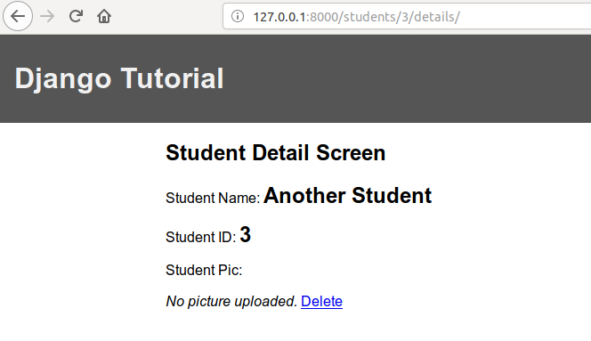
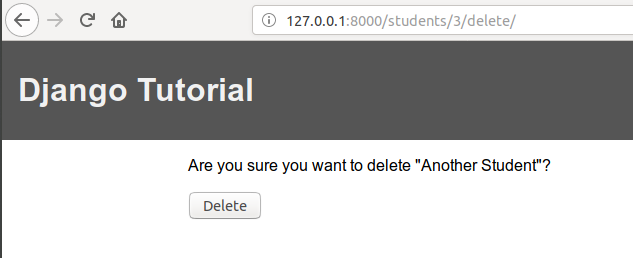
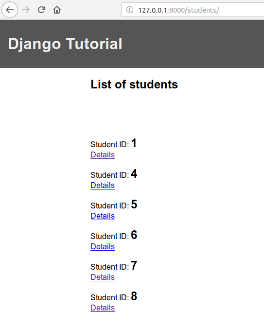

As you might have guessed, this view is used to delete instances of models in the database.
The way that this view is different from other views is that this view requires a confirmation of deletion from the user before actually deleting the model. So, before deleting any instance, Django frameworks checks if the request to delete a model comes via a POST request or not. If the request is not POST, the deletion would fail.
Since deletion is model instance specific, we will add the option to delete an instance when displaying the details of that instance. There could be other ways to do this as well such as deleting multiple instances when in the list view but we will leave this for some other day.
But first, we need to define the view that will handle our deletion logic:
# import the generic views.
from django.views.generic import TemplateView, ListView, DetailView, CreateView, UpdateView, DeleteView
class StudentDeleteView(DeleteView):
"""
This will delete the student model instance from the
database. Utilizes Django's inbuilt DeleteView class.
"""
template_name = 'stud-details.html'
model = Student
success_url = reverse_lazy('stud_list')In the above code, please note that the template for the delete view is defined as the "stud-delete.html" which will hold the form that we will submit as POST to delete that model instance. Also, note that we have defined a success url that will take us to the page where we want to go when our deletion is successful. This makes sense here because after deletion, the details page of the instance that we delete will cease to exist and therefore, we need to be routed to another page. This could very well have been a different page altogether - a page that displays a success message upon successful delete.
Now, we will register this view in our urls.py file:
from django.urls import path
from students import views
urlpatterns = [
path('', views.WelcomeView.as_view(), name='welcome'),
path('depts/', views.DeptListView.as_view(), name='dept_list'),
path('depts/<str:pk>/details/', views.DeptDetailView.as_view(), name='dept_details'),
path('students/', views.StudentListView.as_view(), name='stud_list'),
path('students/<int:pk>/details/', views.StudentDetailView.as_view(), name='stud_details'),
path('students/add/', views.StudentAddView.as_view(), name='stud_add'),
path('students/<int:pk>/edit/', views.StudentUpdateView.as_view(), name='stud_update'),
path('students/<int:pk>/delete/', views.StudentDeleteView.as_view(), name='stud_delete'),
]Next, we need to add the ability to delete the model instance in the details page of the instance:
{% extends 'base.html' %}
{% block title %}
Student Details
{% endblock title %}
{% block content %}
<h2>Student Detail Screen</h2>
<p></p>
<p>Student Name: <b style="font-size: x-large">{{ student }}</b></p>
<p>Student ID: <b style="font-size: x-large">{{ student.s_id }}</b></p>
<p> Student Pic: </p>
{# Basic validation in templates #}
{% if student.s_pic %}
<img src="{{ student.s_pic.url }}">
{% else %}
<i> No picture uploaded. </i>
{% endif %}
{# Link to delete this model instance. This will #}
{# take us to the page where we will ask for #}
{# confirmation of the deletion of the model. #}
<a href="{% url 'stud_delete' pk=student.pk %}"> Delete </a>
{% endblock content %}Finally, we need to write up our confirmation page for deletion of the model instance. For this, create a file named stud-delete.html in the templates folder:
tutorial/
|-- assets/
| `-- media/
| `-- student_pics/
|-- students/
| |-- migrations/
| `-- templates/
| |-- base.html
| |-- dept-details.html
| |-- dept-list.html
| |-- stud-delete.html <-------This one.
| |-- stud-details.html
| |-- stud-edit.html
| |-- stud-list.html
| `-- welcome.html
`-- tutorial/In stud-delete.html, let us create a basic form that will show a message for the user to confirm before deleting the model instance where we will use Django Template Language to make life easy for us:
{% extends 'base.html' %}
{% block title %}
Student Delete
{% endblock title %}
{% block content %}
<form method="post">{% csrf_token %}
<p>Are you sure you want to delete "{{ object }}"?</p>
<input type="submit" value="Delete" />
</form>
{% endblock content %}So now, if you want to delete a student instance, we need to follow the deletion link from the details page of that instance which will in turn ask us for a confirmation. Once, we confirm that we want to delete the instance, we will be taken to the "success_url" page which we defined in our StudentDeleteView as the named url entity "stud-delete" in our urls.py.


